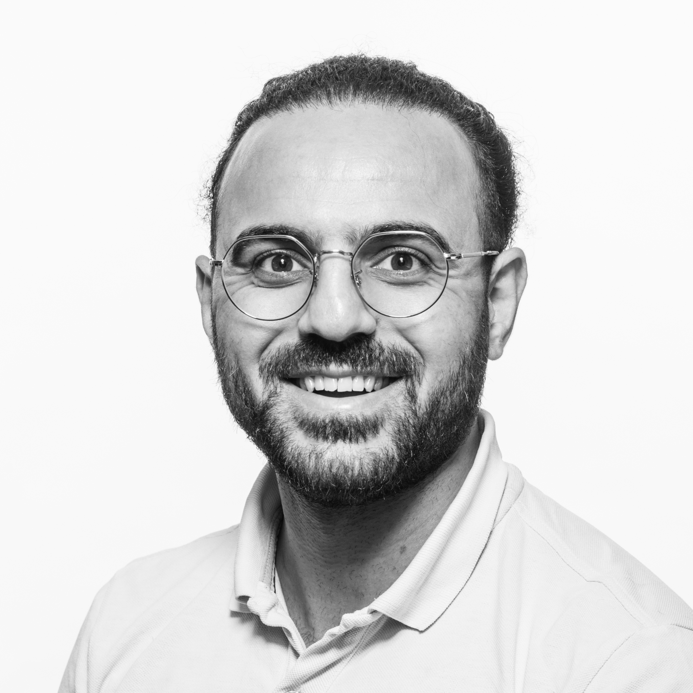
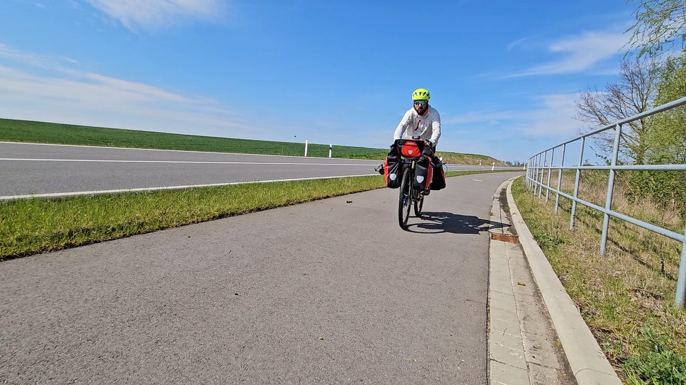
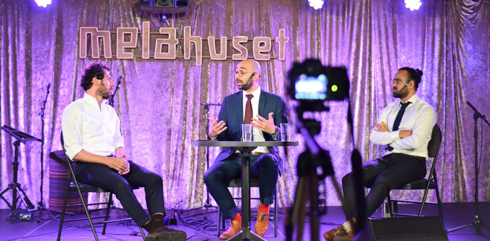
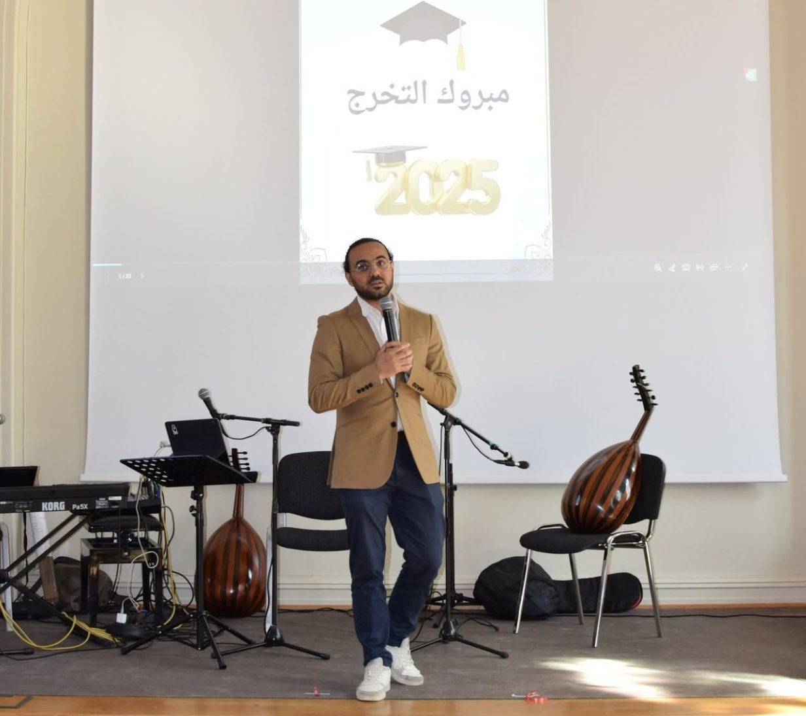

Professional
Project delivery, quality assurance, Agile leadership and digital transformation in complex environments.
View experience ↗Oslo, Norway · Working across technology and society
I’m Alaa Same, a Solution Consultant and project professional who also builds communities, hosts conversations and turns ambitious ideas into visible action.

One profile, three dimensions
I combine analytical delivery with clear communication and social initiative. The result is a profile that can navigate complex programmes, bring stakeholders together and tell the story behind the work.
Project delivery, quality assurance, Agile leadership and digital transformation in complex environments.
View experience ↗Building trust, facilitating dialogue and organizing initiatives that help people participate and belong.
See community work ↗Podcasts, public speaking and media projects that make complex experiences accessible and human.
Explore media ↗Signature project
A 5,000-kilometre, 66-day bicycle journey from Oslo to Damascus that connected a personal story of return with a public mission to support education in Syria.

The road became a storytelling platform. Every stage connected endurance, real-time communication, partnership-building and fundraising into one public campaign.
Visit Cycling4Hope ↗

Professional experience
Selected work across regulated public services, insurance, mobility and technology.
Risk-based test leadership, cross-team coordination and traceable delivery in a legally complex, mission-critical programme.
Structured quality assurance across frontend, backend, interfaces and automation in the Norwegian insurance domain.
Facilitated a cross-functional team and shaped a decision basis for connected-car opportunities and data-driven services.
Selected credentials
Media & dialogue
Research-led conversations, oral history and public dialogue across language and geography.

Gharbiyyin podcast
Arabic-language conversations with researchers and specialists working on the Middle East.
Visit the YouTube channel ↗
Public dialogue
Facilitating conversations where different perspectives can meet constructively.

Community leadership
Public speaking, volunteer leadership and events for student communities.
Community
Community work taught me how to organize people, create belonging and build something others want to be part of.

Let’s connect
I’m interested in meaningful work where technology, delivery, communication and social impact meet.